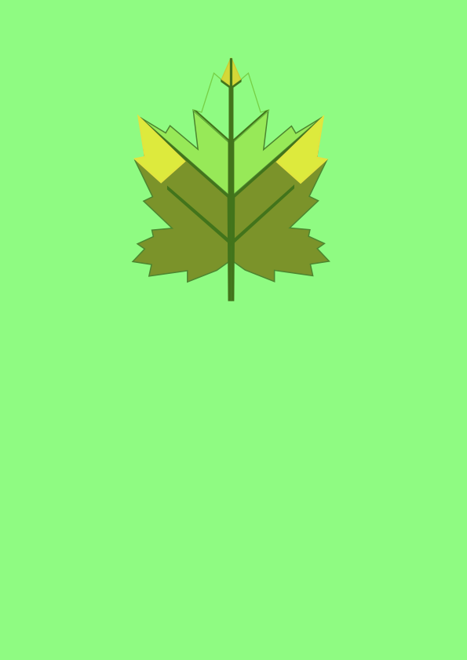

Vježbe
Vektorska grafika
1. vježba - font
2. vježba - krivulje
3. vježba - boja, transformacije
4. vježba - gradijenti i transparencija
1. Projektni zadatak
Piksel grafika
5. vježba - retuširanje

6. vježba - koloriranje
7. vježba - fotomontaža

2. Projektni zadatak
Video i web
8. vježba - kinemagraf